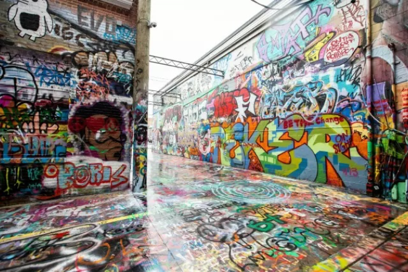
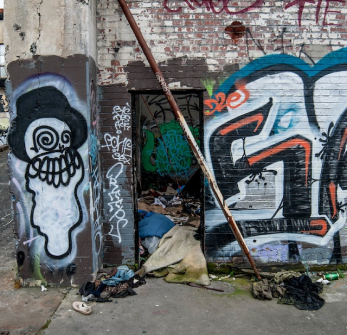
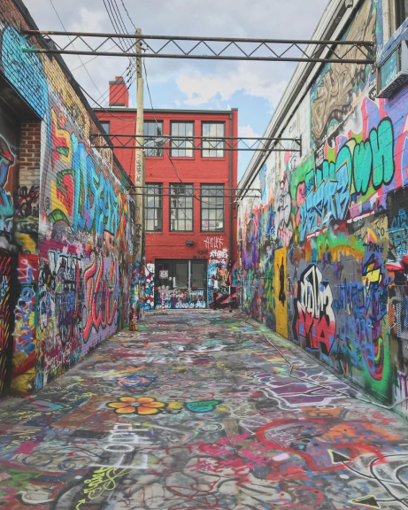

Portland "Legal Walls" circa 2014
The Portland space in these photos clearly lacks accessibility, and safety. It also lacks curb appeal for the surrounding community. This space doesn’t look at all like an exciting space for artists and non-artists to go to engage with the art. By contrast, when we look at Graffiti Alley in Baltimore, Maryland, (below left, bottom right) we see a bright, beautiful, almost dreamlike looking space, in a wide alley off a main street,in a busy district. Businesses bustle down the street outside, and once you walk into the space, you are immersed in a world of color, top to bottom.
Baltimore's Graffiti Alley
What I want for Portland is far off from the sad and dilapidated-looking place pictured above. I want to take the beauty and appeal of Baltimore’s Graffiti Alley a step further, and push the city of Portland, Oregon to create intentionally designed, planned, and constructed “Public Art Parks.” Imagine, a place where youth can legally paint; to be able to express themselves without threat of legal consequences, or having to go to potentially dangerous places. What a privilege to be able to create art on large walls for others to see... to share diverse voices. Imagine a space where families can create art together, and where talented graffiti artists can create to inspire others. Where a community can build a dialogue and encourage a discourse. After all...
THIS is the state that Portland’s “Legall Walls” were in, circa 2014. These images (left, below) were originally included in Rebecca Vipond’s article, A Visit to Portland’s Graffiti Haven, published on Hyperallergic.com. And the place looks aweful. It’s litteredwith dirt, and human waste, with tripping hazards and rusty pipes everywhere. The image is depressing; and the space lacks appeal where appeal could be plentiful. I suppose it doesn’t matter, since it was due to be demolished at the time of Vipond’s writing.
Portland "Legal Walls" circa 2014
Not a single rusty pipe protrudes unnaturally in this environment; curbs don’t create any extra tripping hazards, and the space isn’t littered with trash and clutter. One could imagine that a person in a wheelchair could have near full access to this place.
Baltimore's Graffiti Alley
Every ARTIST needs a PLAYGROUND!